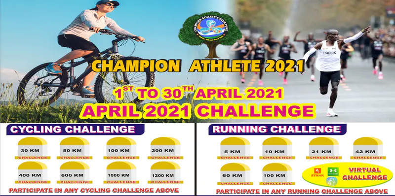

APRIL 2021 CYCLING AND RUNNING CHALLENGE- MUMBAI
EVENT INFORMATION
APRIL 2021 CYCLING AND RUNNING CHALLENGE
1 APRIL 2021 TO 30 APRIL 2021.
Cycling/Running/Walking any time any where all over India.
ALL INDIA RUNNING AND CYCLING CHALLENGE TO MOTIVATE AND ENCOURAGE EVERYONE STAY FIT AND STAY HEALTHY.
CYCLING CHALLENGES
30KM/ 50KM/ 100KM/ 200KM/ 400KM/ 600KM/ 1000KM/ 1200KM
SELECT ANY CYCLING DISTANCE CHALLENGES FROM ABOVE AND ACHIVE IT.
(Challenge explanation:- select any cycling distance challenge for e.g. If we select 200KM then rider have
to complete total 200KM distance in the month of April from 1 April to 30 April 2021. There is no time
or place restriction. )
RUNNING CHALLENGES
5KM/ 10KM/ 21KM/ 42KM/ 60KM/ 100KM
SELECT ANY RUNNING DISTANCE CHALLENGE FROM ABOVE AND ACHIVE IT.
(Challenge explanation:- select any running distance challenge for e.g. if we select 21KM then runner have
to complete total 21KM distance in the month of April. There is no time or place restriction. )
AWARDS:
Memento/Trophy , E-Certificates
WHO CAN JOIN THE EVENT :
* Anyone can join the event from any city any place in India.
1) Registration link given below.
Link:- https://www.townscript.com/e/cycling-and-running-challenge-january-2020-212140
2)How to submit Activity:-
Submit your Activity on Whats app number given below.
Whats App number to submit Activity:-9890975766
RULES:-
1) Participants have to use Strava App or any other GPS tracking app to record their activity.
2) Manual workout activity on strava or any other app not accepted.
3) Post verification we will facilitate finisher with the exclusive Trophy & E- Certificate.
For any queries contact:- (what’s app)9890975766/7776904691
Mail id:- championathletesclub@gmail.com
***Registration is non-refundable and non-transferable under any circumstances.